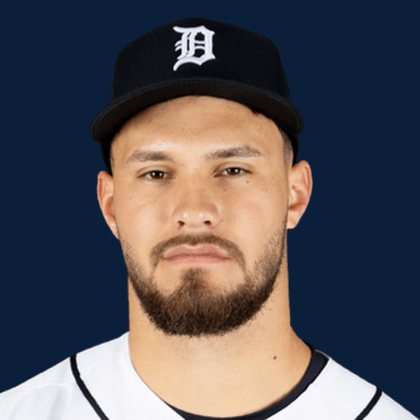

BASEBALLKEEP
Dynasty · Redraft · Diamond
Player File · 1B DET

Josue Briceño
1B · DET · age 21 · B/T LR · 6' 4" / 200 lbs · Maracay, Venezuela
Hitting
| Year | G | AB | R | H | 2B | HR | RBI | SB | BB | SO | AVG | OBP | SLG | OPS |
|---|---|---|---|---|---|---|---|---|---|---|---|---|---|---|
| 2026 AAA | 7 | 24 | 3 | 4 | 2 | 0 | 4 | 0 | 4 | 9 | .167 | .286 | .250 | .536 |
Plus
- Age 21 — still climbing the curve.
Minus
- Board spread is 43 ranks. You are betting with one camp, not a unanimous tape.
- Keep #279 is the edge of the 300. Deep-league / taxi-squad more than a foundation chip.
BaseBallKeep Take
Josue Briceño is #279 on BaseBallKeep's overall dynasty 300, a 23-source mix anchored by RotoGraphs (Aug 14) and The Dynasty Guru points list (Aug 10). 1B for DET. Lineup #200. Rest-of-season redraft #281. From Maracay / Venezuela. Bats L, throws R.
BK Value on this rank is 44. Same decaying curve as football: 12,000 at 1.01, a late first a fraction of that. If someone is asking for two firsts, run the calculator. 2026 line: .167 / 0 HR / 0 SB / .536 OPS in 7 games.
The 23-board average is 285.5 on 2 lists that actually ranked him — unranked sources are skipped, never treated as 999. High 264, low 307.
Dynasty pays the next five years. Redraft pays September. If those two ranks diverge, that is the instruction: hold the kid or cash the veteran.
Flags fly forever. We will refresh this file with The Keep. September baseball is a proving ground, not a coronation.
Every Board
Spread 264–307 · 2 sources
| Source | Rank |
|---|---|
| TDG Points | 264 |
| RotoGraphs Model | 307 |
On The Keep nearby — Matt Chapman (#277) · Anthony Eyanson (#278) · Taylor Ward (#280) · Lawrence Butler (#281)
Same position on the 300 — Nick Kurtz #9 · Pete Alonso #29 · Matt Olson #31 · Vladimir Guerrero Jr. #41 · Munetaka Murakami #55 · Rafael Devers #57
All players · The Keep · BK News · The Lineup · Pitchers · Calculator